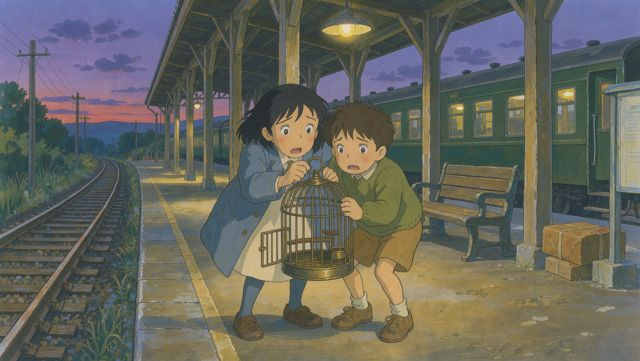
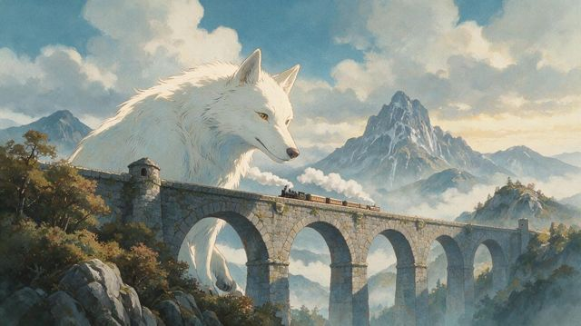
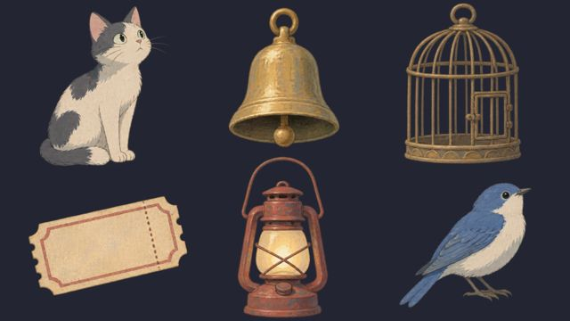
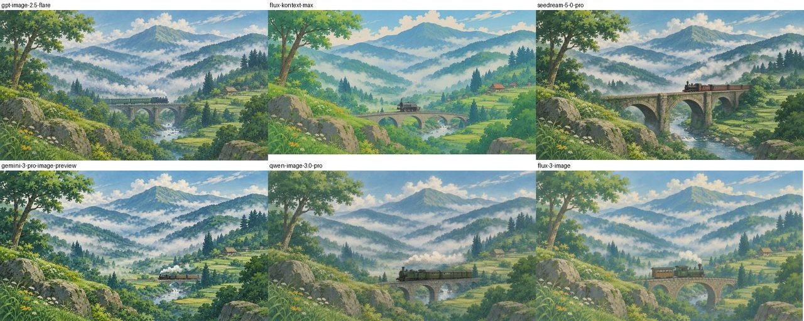
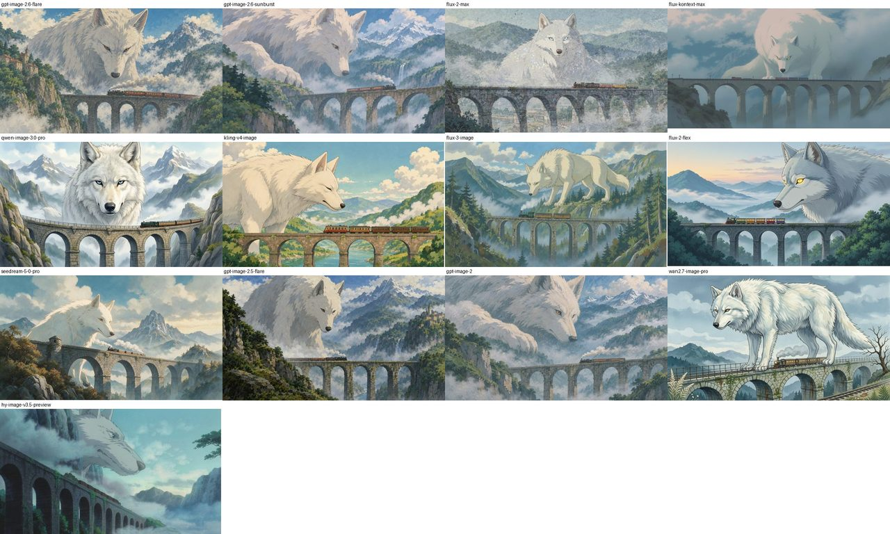

Benchmark · · 6 min read
Image model bench: what 25 models cost and where they fail
We needed art for a short film: frightened faces, wide plates and prop sheets with a real transparent background. We ran three passes over image models on one gateway, APIMart, and kept the cost, the time and our verdict for each use.
Verdict
Use gpt-image-2.6-flare at $0.026 an image for faces, plates and cut-out props. Use gpt-image-2 at $0.0085 when cost matters. Only 3 of 13 scored models sit on the cost-quality frontier; the other 10 cost more or score lower.
- Faces and feargpt-image-2.6-flareScore 5 in both runs
- Wolf and platesgpt-image-2.6-flareflux-3-image is the painterly second, $0.038
- Cut-out propsgpt-image-2.6-flareReal alpha in both runs
- Cheap bulkgpt-image-2$0.0085; dropped alpha in 1 of 2 prop runs
- Same character from a referenceseedream-5-0-pro or 2.6-flareScore 4 of 5
Method
- PromptSix prompts: fear, wolf, props, valley, cine, pair.
- Generate25 models, 1K, 16:9, one image per call. Cost and time come from the task result.
- Score0 to 5 by eye. Alpha is measured in code: clear above 0.4, half below 0.03.
- RepeatThe top 5 ran again, to see run-to-run drift.
- Pass 1: 15 models, 3 prompts. 38 of 45 images came back, $0.93.
- Pass 2: 14 models, 4 prompts, scored on style, emotion and faces, text-free output and edge quality. $2.38 with the reference test.
- Pass 3: 6 models, 6 images each, $0.94. A repeat of the 4 pass 2 prompts, plus a wide wolf plate and a character pair.
Frontier
3 of 13 models are on the frontier: nothing is cheaper and scores higher. gpt-image-2 is the cheap end at $0.0085. gpt-image-2.6-sunburst and gpt-image-2.6-flare tie at the top, $0.026 for a 5.0. flux-2-max and flux-2-flex cost $0.08, three times more, and score 3.25 and 3.5.
Data behind the chart
| Model | $ per image | Score | Status |
|---|---|---|---|
| gpt-image-2 | $0.0085 | 4.50 | on the frontier |
| hy-image-v3.5-preview | $0.0192 | 3.25 | beaten |
| gpt-image-2.6-sunburst | $0.0261 | 5.00 | on the frontier |
| gpt-image-2.5-flare | $0.0261 | 4.50 | beaten |
| gpt-image-2.6-flare | $0.0261 | 5.00 | on the frontier |
| qwen-image-3.0-pro | $0.0286 | 3.25 | beaten |
| seedream-5-0-pro | $0.0360 | 3.50 | beaten |
| flux-3-image | $0.0384 | 3.50 | beaten |
| wan2.7-image-pro | $0.0544 | 3.75 | beaten |
| kling-v4-image | $0.0571 | 2.50 | beaten |
| flux-kontext-max | $0.0640 | 2.50 | beaten |
| flux-2-max | $0.0800 | 3.25 | beaten |
| flux-2-flex | $0.0800 | 3.50 | beaten |
Winners by use
Faces and fear
gpt-image-2.6-flare gave true fear: wide eyes, huddled kids, $0.026. 2.6-sunburst is equal but slower (29 s against 12 s). flux-2-flex and flux-3-image draw calmer faces; flux-2-max is speckled and flux-kontext-max shows tiny distant kids. In pass 1, flux-2-pro, gemini-3-pro-image-preview and minimax-h3-image-highspeed drew calm or stiff faces.



Wolf and plates
flare and sunburst were richest. flux-3-image has the best Ghibli background feel at $0.038, but its wolf is smaller. seedream-5-0-pro and qwen-image-3.0-pro are clean. In pass 1 every model made a good plate. The new wide wolf plate (cine) scored 5 for flare and sunburst, 4 for gpt-image-2, seedream and gemini, 3 for flux-3-image.


Cut-out props
Only gpt-image-2, 2.5 and 2.6 (flare, sunburst) and wan2.7-image-pro give real alpha. Use gpt-image-2.6-flare: the cleanest, with hard edges, and real alpha in 2 of 2 runs. Flux and Seedream draw a fake checkerboard or a white backdrop. Shown on a dark ground.


Cost-efficient
gpt-image-2 at $0.0085 is the pick for bulk. Use gpt-image-2.6-flare at $0.026 when quality matters.
Repeat runs
We ran the top 5 again on the same 4 prompts. 4 of 20 scores changed, and 2 moved by 2 points or more. Both 2.6 models held all 8. The risk sits in the cheaper models.
| Model | Fear | Wolf | Valley | Props |
|---|---|---|---|---|
| gpt-image-2.6-flare | 5 → 5 | 5 → 5 | 5 → 5 | 5 → 5 |
| gpt-image-2.6-sunburst | 5 → 5 | 5 → 5 | 5 → 5 | 5 → 5 |
| gpt-image-2 | 4 → 4 | 4 → 4 | 4 → 4 | 5 → 2 |
| flux-3-image | 3 → 3 | 3 → 3 | 4 → 3 | 2 → 2 |
| seedream-5-0-pro | 3 → 4 | 4 → 2 | 4 → 4 | 2 → 2 |




Reference image
All six models in the first test accept image_urls, a list of URLs or base64 data URIs, in the same request. All kept the style and layout; the Gemini and gpt outputs reproduced the reference composition most closely, while seedream and flux-3 restyled the bridge more freely. Cost: $0.200 for the six.
Pass 3 asked for the same girl in a new pose. 2 of 6 scored 4 (flare, seedream). sunburst, gpt-image-2 and gemini scored 3 because they copied the reference's gold frame border into the new image; flux-3-image changed her skirt to trousers.


Round 2 test: six models, one reference

Oddities
- Gateway
midjourney: all 4 requests rejected with
model_price_error. The price is not set on APIMart; this is the gateway, not the model. - Resolution
kling-v4-image needs 2K or higher, so we ran 2K.
- Text
kling painted a sign and a lantern in kanji. qwen-image-3.0-pro put Japanese text on the ticket.
- Alpha
Flux and Seedream paint the transparency grid into the image instead of returning alpha. gpt-image-2 once drew a backdrop.
- Failures
imagen-4.0-apimart failed all 3 pass 1 requests (
KeyError 'result', about 62 s each). grok-imagine-image-2.0 rejects thesizeparameter and was not retried. seedream-5-5 failed the fear prompt (status failed, $0, reason not read).
Limits
- 3 or 4 prompts per model, one image each; only 5 models have a second run. A lucky draw shows as a result.
- The 0 to 5 scores are one reviewer's eyes. The alpha check is the only measured test.
- The frontier uses pass 2 scores only. Models seen only in pass 1 are unscored.
- Not tested: image editing beyond one reference, native 2K or 4K (apart from kling), Midjourney, video models.
- Prices and speeds are what the gateway reported on 21 Nov 2026 and will change.
Used in
These images were made for Ghibli Claude, our short film rebuilt in code. Six stills from gpt-image-2.6-flare replace 4.8 s of the painted cut. See the cut. All 16 generated images cost $0.57; flare beat flux-3-image on all 8 frames.

Generated In the film, 32.1 s The wolf looms over the viaduct

Generated 
In the film, 34 s The empty cage and the blue feather

Generated In the film, 34.85 s The children look up in terror
Generated In the film, 35.55 s Hands over mouths, tears
Generated 
In the film, 36.15 s The boy, close up
Generated 
In the film, 38.45 s The girl holds the feather
Source code and data
- bench.py submit, poll, download
- run_all.py pass 1
- run2.py pass 2 (prompts)
- ref.py reference test
- run3.py pass 3
- sheets3.py contact sheets
- film_frames_gen_v2.py film stills
- results.json pass 1
- results2.json pass 2
- results3.json pass 3
- ref_results.json reference test
- scores.json all scores
- table.md, table2.md
- README.md
Pass 1 table: 45 requests
| Model | OK of 3 | Avg seconds | Avg $ per image |
|---|---|---|---|
| gemini-3.1-flash-lite-image | 3 | 21 | 0.027 |
| gemini-nano-banana-2.1 | 3 | 46 | 0.032 |
| gemini-3-pro-image-preview | 3 | 25 | 0.020 |
| gpt-image-2.5-flare | 3 | 21 | 0.026 |
| gpt-image-2 | 3 | 24 | 0.009 |
| seedream-5-0-pro | 3 | 62 | 0.036 |
| seedream-5-5 | 2 | 24 | 0.016 |
| flux-3-image | 3 | 27 | 0.038 |
| flux-2-pro | 3 | 19 | 0.036 |
| qwen-image-3.0 | 3 | 9 | 0.021 |
| minimax-h3-image-highspeed | 3 | 21 | 0.036 |
| grok-imagine-image-2.0 | 0 | 0 | 0.000 |
| z-image-turbo | 3 | 6 | 0.010 |
| mai-image-2.7-flash | 3 | 16 | 0.008 |
| imagen-4.0-apimart | 0 | 0 | 0.000 |
Pass 2 table: time, cost and scores
| Model | OK of 4 | Avg seconds | Avg $ per image | Style | Emotion | Text-free | Edge | Real alpha |
|---|---|---|---|---|---|---|---|---|
| gpt-image-2.6-flare | 4 | 12 | 0.026 | 5 | 5 | 5 | 5 | yes |
| gpt-image-2.6-sunburst | 4 | 29 | 0.026 | 5 | 5 | 5 | 5 | yes |
| flux-2-max | 4 | 34 | 0.080 | 3 | 3 | 5 | 2 | no |
| flux-kontext-max | 4 | 22 | 0.064 | 2 | 2 | 5 | 1 | no |
| qwen-image-3.0-pro | 4 | 13 | 0.029 | 4 | 4 | 3 | 2 | no |
| kling-v4-image | 4 | 35 | 0.057 | 4 | 2 | 2 | 2 | no |
| flux-3-image | 4 | 24 | 0.038 | 4 | 3 | 5 | 2 | no |
| flux-2-flex | 4 | 25 | 0.080 | 4 | 3 | 5 | 2 | no |
| seedream-5-0-pro | 4 | 53 | 0.036 | 4 | 3 | 5 | 2 | no |
| gpt-image-2.5-flare | 4 | 22 | 0.026 | 4 | 4 | 5 | 5 | yes |
| gpt-image-2 | 4 | 24 | 0.009 | 4 | 4 | 5 | 5 | yes |
| wan2.7-image-pro | 4 | 29 | 0.054 | 3 | 3 | 5 | 4 | yes |
| hy-image-v3.5-preview | 4 | 20 | 0.019 | 3 | 3 | 4 | 3 | no |
Contact sheets, pass 2

